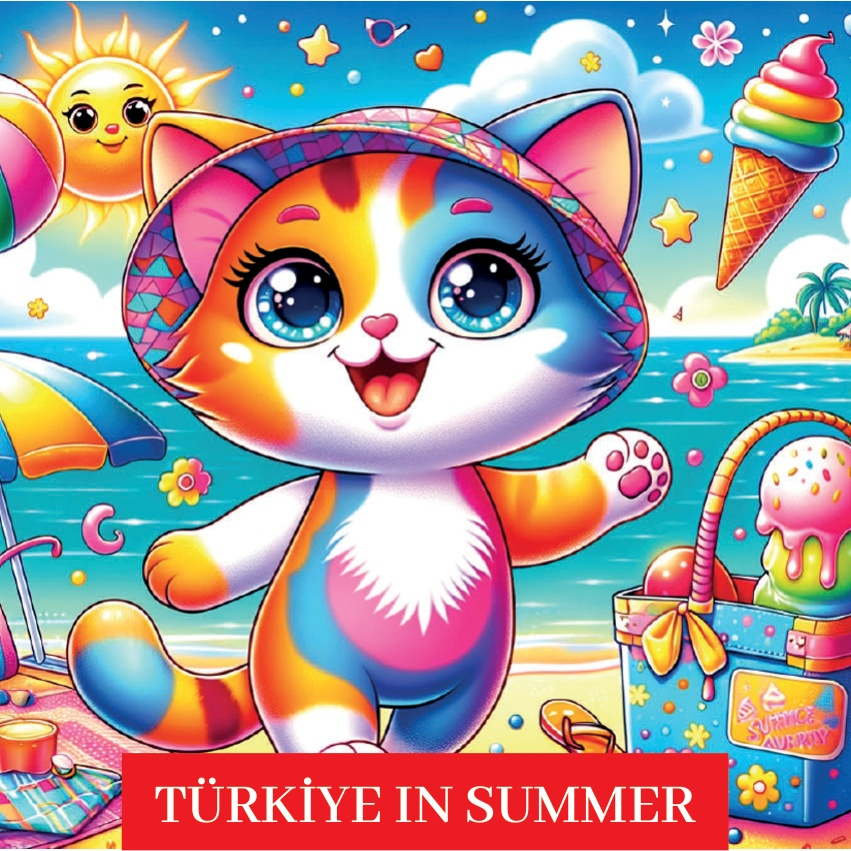
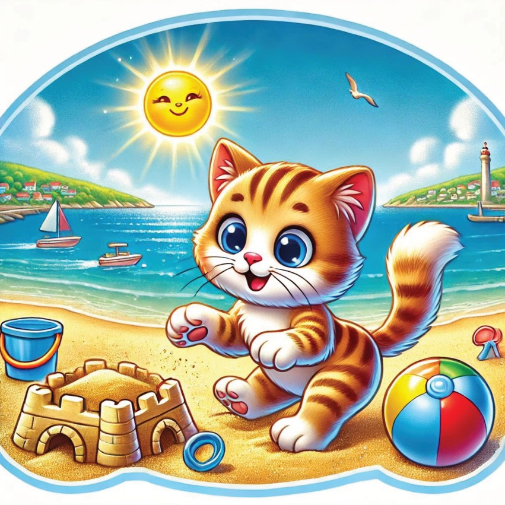
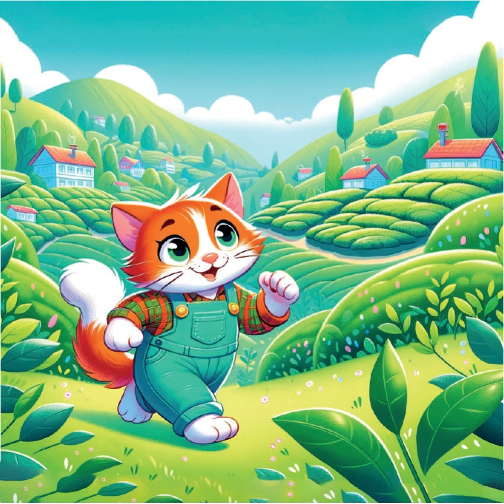

1

2

3
Бір уақытта Карамел атты белгілі бір ізgin кішкентай бесене болды, ол әртүрлі маусымдарды зергеуді жақсы көрітін. Бір күні ол Türkiye-дің жолы арқылы сапарға шығыs атып, жаздың әдемілігі мен завърбасшылығын таभाрлауға шешім қатый.
4
5
Мармарай аймағы - Стамбул:
Босфоры бойында круиз
Карамелдің бірінші тоқталуы Стамбул болды,
онда ол Босфор бойында круизге шықты.
Пәयір су және салқын жел қаланы
да әрі магиялық етті.
6
7
Айген регионы - Измир:
Пляж батысы
Sonra Karamel Измирге саяхат etti,
онда топырақ жамбас жағажайларда ойынлады.
Тас жамылған көрікшіл су және жылы күн,
пляж батысы үшін тамам болған күн болды.
8

9
Медитерапия аймағы – Анталья:
Су спорты
Антальяда Карамэль су спортының байқауын білді.
Олジェットски және парасейлинг сияқты іс-шараларды сынап көріп,
адреналин ағынынан және әдемі жағажайдан ләззат алды.
10
11
Кентральды Анатолия - Каппадокия:
Герілгішпен ұшу
Қарамел Каппадокияға саяхат жасап,
бұнда герілгішпен ұшты.
Перишіндер мен тас formations-ның тамаша ландшафты
жоқтан да тамаша болды.
12
13
ดำ Дөңгес өңірі – Ризе:
Чай багшалары
Ризеде Карамел гүлденен чай багшаlarını з্যраттады.
Сарылған далалар мен таза һава
ölсіз və жағымлы дағы жаз саяхатындағы
түсінішті тоқталуға мүмкіндік берді.
14

15
Союсаణా Анатолия – Газиантеп:
Дөңгелек шаим
Карамелдің келесі тоқтамасы Газиантеп болды,
онда ол дәмді дөңгелек шаим ішті.
Түрік дөңгелек шаймының ерекше дәмі мен құрымы
ертеңгі жайтым тәжірибе болды.
16
17
Шығыс Анатолия - Ван:
Ван Gölü
Ваన్లో Карамел Ван Gölüнің сұлулығын байқайды.
Кристалл айнадай cristall-ауыр су және таулардың тамаша көрінімі де, оны демалу үшін таптырмас орын болды.
18
19
Карамел көңілініңәәресіндегіәәй жаз қуанышы мен жаңа тәжірибелермен,
Түркияның әрбір аймағының өзіндік жазқы әсемдігі бар екенін түсінді.
Ол үйіне оқсаса да, келесі маусымдық ізгілікті ертеуі туралы ұялдай отырып ойланды.
20
21
22